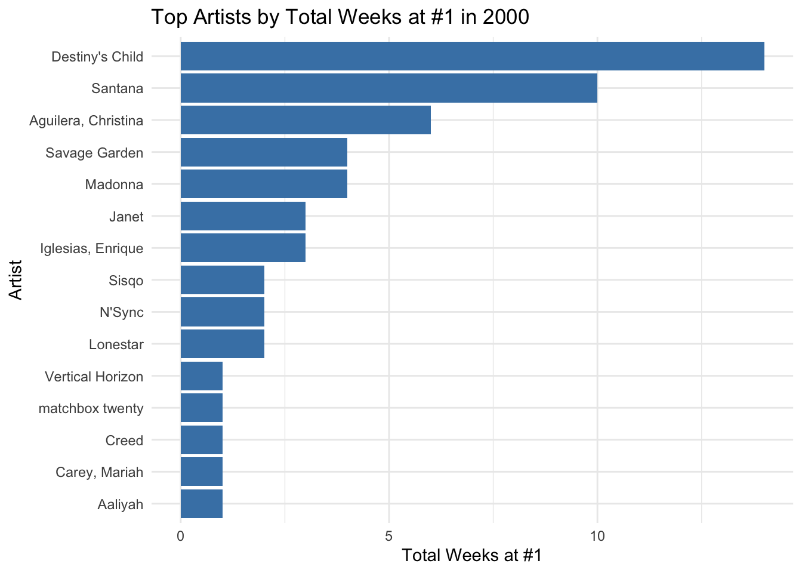
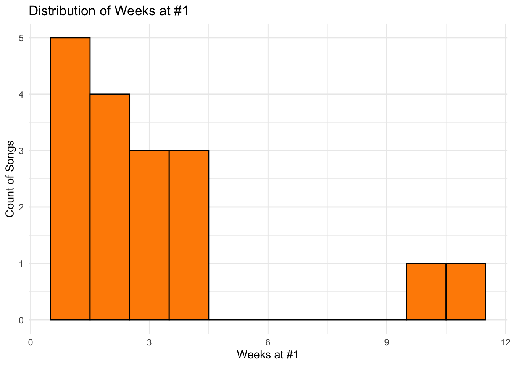

This analysis focuses on the Billboard Top 100 chart from the year 2000, particularly examining the #1 hit singles that stayed at the top position the longest. Using data manipulation and visualization techniques in R, we can gain insights into the music trends of that year and identify the most dominant songs and artists.
Libraries and Data Preparation
We start by loading the necessary R libraries for data manipulation, visualization, and analysis.
Show the code
library(tidyverse) # For data manipulation and visualizationlibrary(lubridate) # For date manipulationlibrary(skimr) # For summarizing datalibrary(survival) # For survival analysis (not used in this example)library(survminer) # For visualizing survival analysis (not used in this example)library(flextable) # For creating flexible tableslibrary(DT) # For interactive tables
The billboard dataset is reshaped to gather weekly rankings into a long format, making it easier to filter and analyze the data.
Show the code
# Load the datasetdata("billboard", package ="tidyverse") # Ensure you have the billboard dataset loadedds = billboard# Reshape the data from wide to long formatds = billboard %>%gather(key = week, value = rank, wk1:wk76)# Convert week column to numeric and ensure rank is numericds$week =as.numeric(gsub("wk", "", ds$week))ds$rank =as.numeric(ds$rank)
Filtering and Summarizing Data
We filter the dataset to include only the rows where the song was ranked #1. Then, we group by artist and track to count the number of weeks each song stayed at the top position.
Show the code
# Filter for #1 ranked songs and summarize the duration at #1ds = ds %>%filter(rank ==1) %>%group_by(artist, track) %>%summarize(weeksAtNumberOne =n()) %>%arrange(desc(weeksAtNumberOne))# Display the summarized data as a flextableas_flextable(ds)
artist
track
weeksAtNumberOne
character
character
integer
Destiny's Child
Independent Women Pa...
11
Santana
Maria, Maria
10
Aguilera, Christina
Come On Over Baby (A...
4
Madonna
Music
4
Savage Garden
I Knew I Loved You
4
Destiny's Child
Say My Name
3
Iglesias, Enrique
Be With You
3
Janet
Doesn't Really Matte...
3
Aguilera, Christina
What A Girl Wants
2
Lonestar
Amazed
2
n: 17
We use the flextable library to create a flexible and visually appealing table that displays the artists and tracks along with the number of weeks they stayed at #1.
Additional Visualizations
Show the code
# Summarize total weeks at #1 for each artistartist_summary <- ds %>%group_by(artist) %>%summarize(totalWeeksAtNumberOne =sum(weeksAtNumberOne)) %>%arrange(desc(totalWeeksAtNumberOne))# Bar chart of top artists by total weeks at #1ggplot(artist_summary, aes(x =reorder(artist, totalWeeksAtNumberOne), y = totalWeeksAtNumberOne)) +geom_bar(stat ="identity", fill ="steelblue") +coord_flip() +labs(title ="Top Artists by Total Weeks at #1 in 2000", x ="Artist", y ="Total Weeks at #1") +theme_minimal()

Show the code
# Histogram of weeks at #1ggplot(ds, aes(x = weeksAtNumberOne)) +geom_histogram(binwidth =1, fill ="darkorange", color ="black") +labs(title ="Distribution of Weeks at #1", x ="Weeks at #1", y ="Count of Songs") +theme_minimal()

Show the code
# Interactive data tabledatatable(ds, options =list(pageLength =10, autoWidth =TRUE),caption ='Number of Weeks Each Song Stayed at #1 in 2000')
Conclusion
This analysis provides a clear view of the songs that dominated the Billboard Top 100 charts in the year 2000. By identifying the tracks that remained at #1 the longest, we can better understand the music trends and preferences of that time. This type of analysis can be expanded to include other years or additional chart metrics to gain further insights into the evolution of popular music.